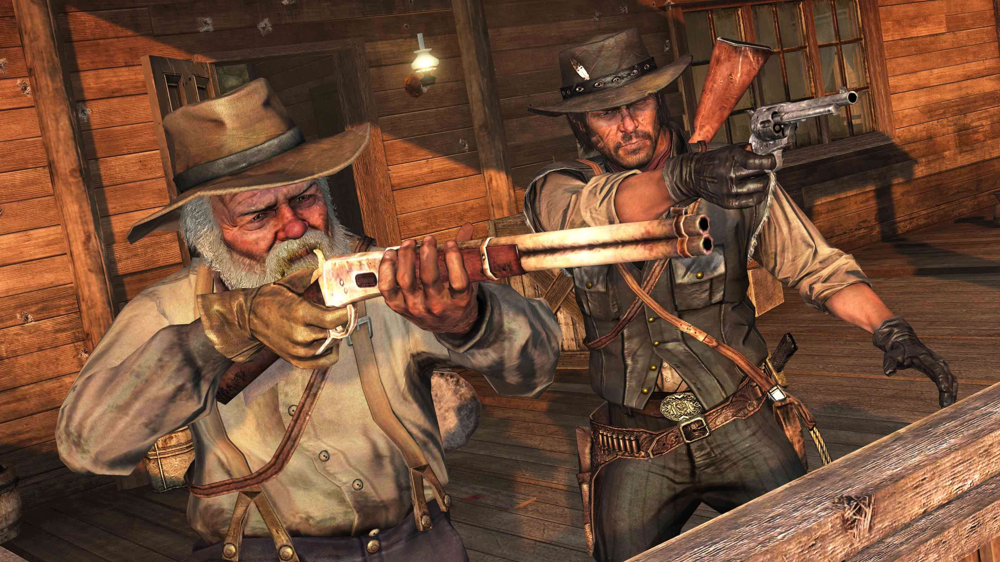
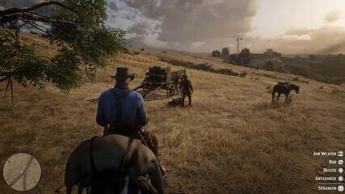
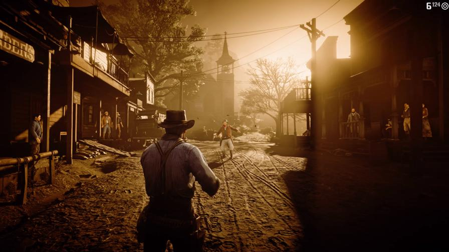

Red Dead Redemption 2 é um jogo de ação-aventura em mundo aberto da Rockstar Games, que se passa em 1899 e segue a história de Arthur Morgan, um fora da lei da gangue Van der Linde, durante o declínio do Velho Oeste americano.



📜 História e Enredo (Modo História)
O Red Dead Redemption 2 (RDR2) é um dos jogos de ação-aventura em mundo aberto mais aclamados e detalhados de todos os tempos, sendo considerado por muitos uma obra-prima da Rockstar Games (a mesma criadora de Grand Theft Auto).Aqui estão as informações essenciais sobre o jogo:🤠 Visão Geral do Jogo Característica Detalhe Desenvolvedora Rockstar Games Gênero Ação-Aventura, Faroeste, Mundo AbertoLançamento (PS4/Xbox One)26 de Outubro de 2018Lançamento (PC/Stadia)5 de Novembro de 2019PlataformasPlayStation 4, Xbox One, Microsoft WindowsPrêmios PrincipaisVencedor de inúmeros prêmios de Jogo do Ano, Melhor Narrativa, Melhor Performance (Arthur Morgan), entre outros.📜 História e Enredo (Modo História)O RDR2 é uma prequela (acontece antes) do primeiro Red Dead Redemption.Ambientação: Estados Unidos, 1899. A era do Velho Oeste está chegando ao fim, e o governo e os caçadores de recompensas estão caçando as últimas gangues de foras-da-lei.Protagonista: Você joga como Arthur Morgan, um membro sênior e leal da infame gangue Van der Linde, liderada pelo carismático Dutch van der Linde.O Início: Após um assalto a balsa que dá terrivelmente errado na cidade de Blackwater, a gangue é forçada a fugir, sendo implacavelmente perseguida por agentes federais (os Pinkertons) e caçadores de recompensas.O Dilema: O jogo acompanha a luta da gangue para sobreviver em um mundo cada vez mais civilizado e sem espaço para foras-da-lei. Conforme as divisões internas e a pressão externa aumentam, Arthur Morgan deve escolher entre seus próprios ideais e a lealdade à gangue que o criou, questionando a liderança e os planos de Dutch. O jogo explora temas de lealdade, honra, redenção e o fim de uma era.
🐎 Jogabilidade e Mecânicas
O RDR2 é aclamado por sua atenção obsessiva aos detalhes e a profundidade de suas mecânicas: Mundo Aberto Vivo: O mapa é vasto e extremamente detalhado, repleto de fauna, flora e personagens não jogáveis (NPCs) que interagem realisticamente com o jogador e entre si. Verossimilhança e Ritmo: O jogo adota um ritmo mais lento e realista. Ações como cuidar do cavalo, cozinhar, limpar armas, e interagir com o acampamento da gangue são cruciais para a imersão. Sistema de Honra: Suas ações no mundo afetam seu "Nível de Honra". Ser honrado (ajudar pessoas, evitar mortes inocentes) abre novas missões e diálogos, enquanto ser desonrado (roubar, matar) leva a encontros mais agressivos e maiores recompensas pela sua cabeça. Interação com NPCs: Você pode interagir verbalmente com praticamente qualquer NPC, podendo escolher entre respostas positivas (saudar) ou negativas (ameaçar), o que pode levar a consequências imprevisíveis. Combate Dead Eye: O famoso sistema de mira em câmera lenta retorna, permitindo que você marque vários alvos para serem atingidos em sucessão rápida, essencial em grandes tiroteios. Acampamento: O acampamento da gangue serve como seu centro de operações. Contribuir com dinheiro, comida e suprimentos melhora a moral e o bem-estar dos membros, habilitando melhorias e interações de história.
👥 Red Dead Online
O jogo também inclui o Red Dead Online, uma experiência multijogador ambientada no mesmo mundo. Nele, você cria seu próprio personagem e pode: Formar Bandos (grupos de jogadores). Assumir "Profissões" como Caçador de Recompensas, Comerciante, Colecionador, Destilador de Moonshine (Contrabandista) e Naturalista. Completar missões da história, eventos de mundo aberto e modos competitivos.